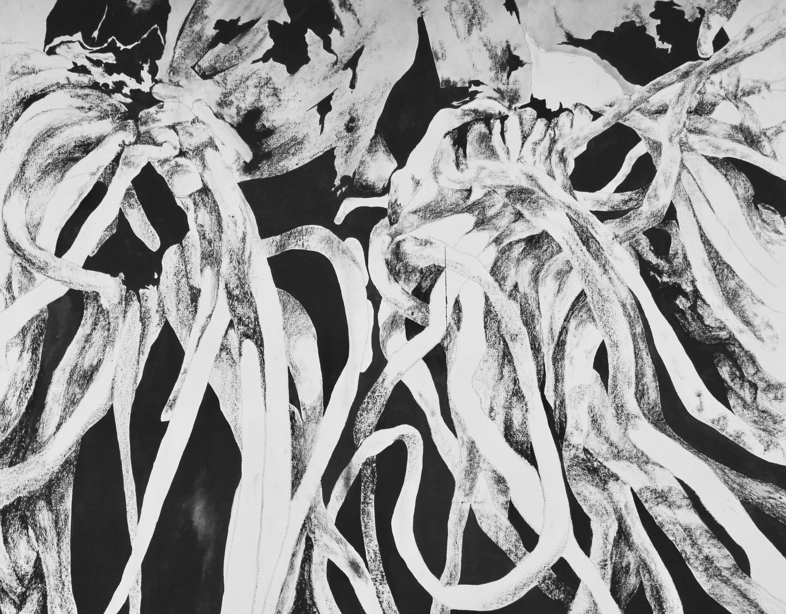
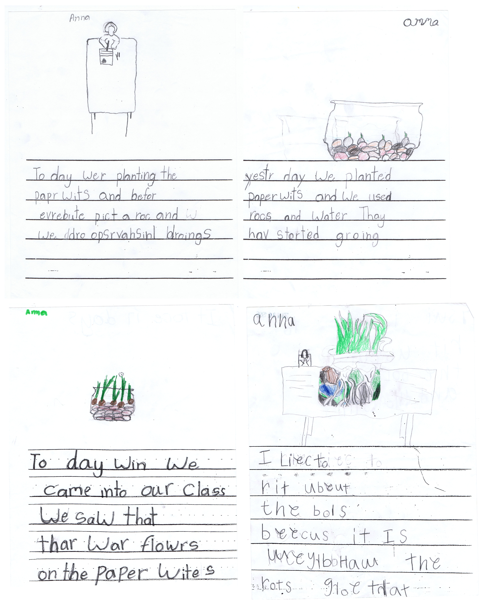

Narcissus tazetta
In kindergarten, my class planted Narcissus tazetta plants, and recorded their growth through daily drawings.
Twelve years later, I repeated the exercise. Like the early drawings, these later drawings begin as observations; they use drawing as a means of seeing and studying. But by placing the viewer within the roots, the later drawings become landscapes of mysterious forms.

